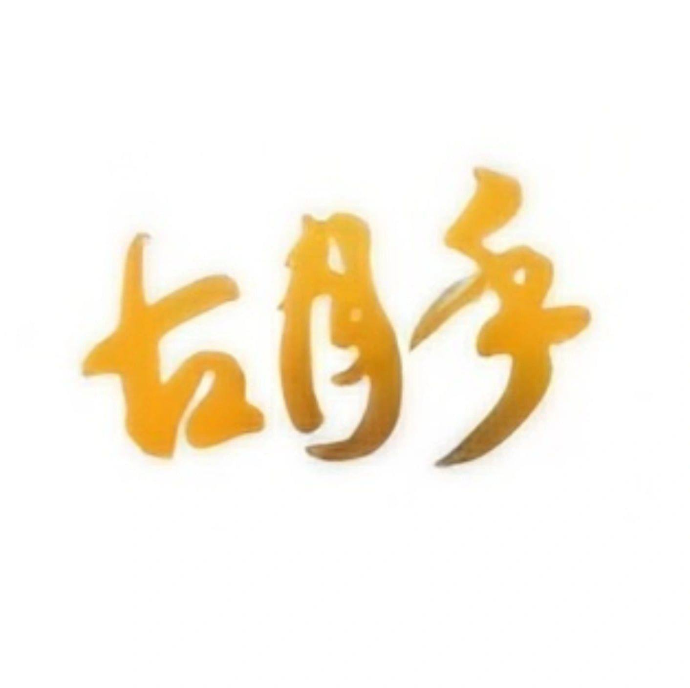
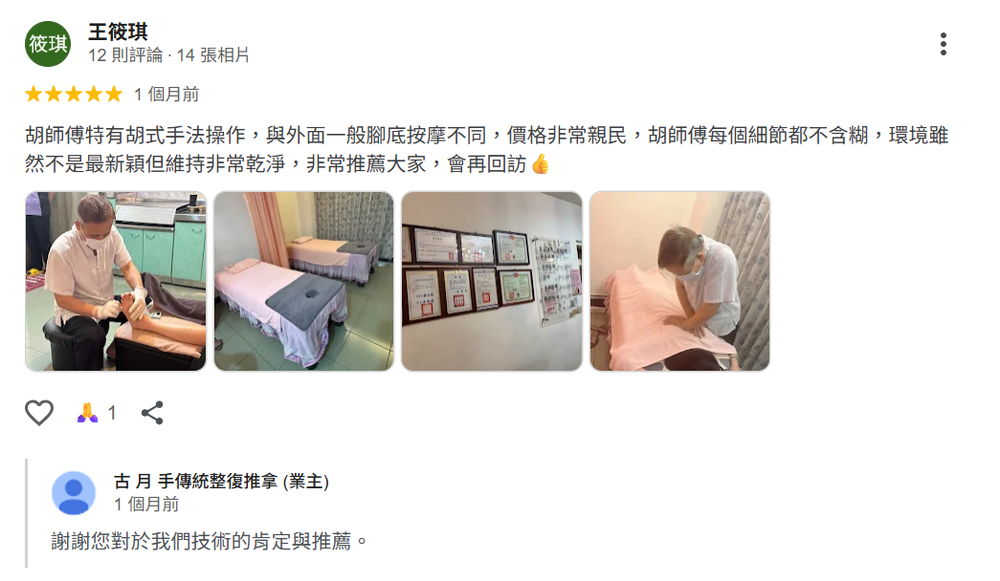
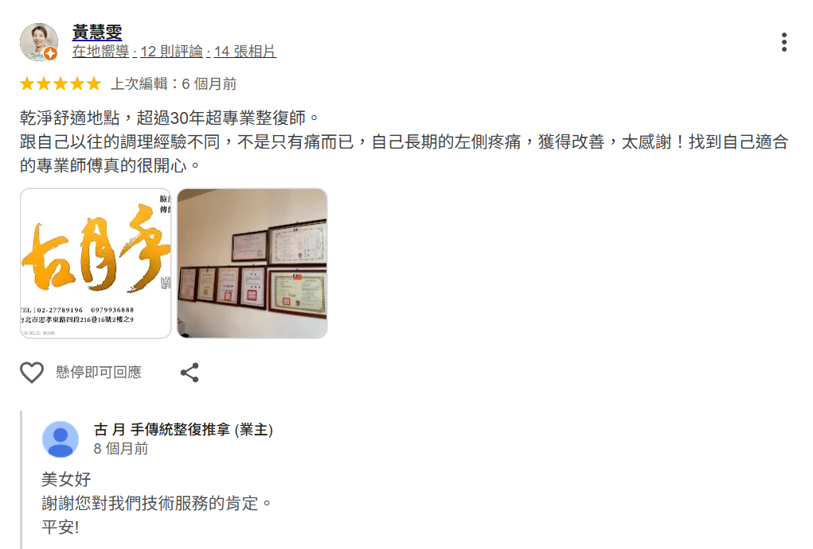
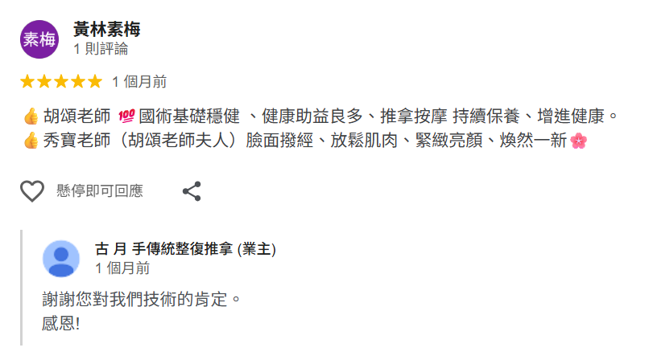
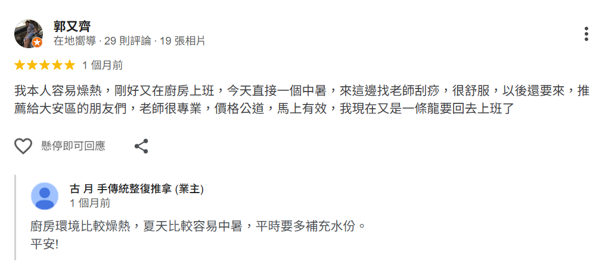
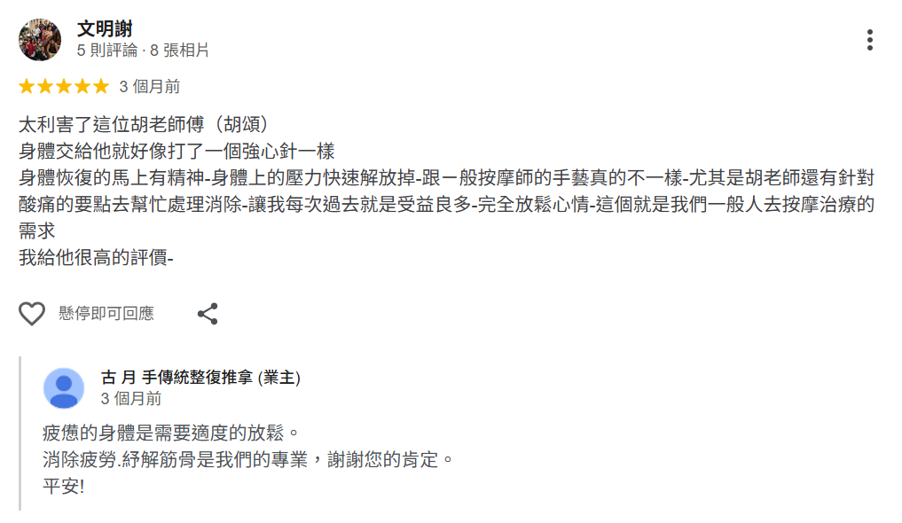
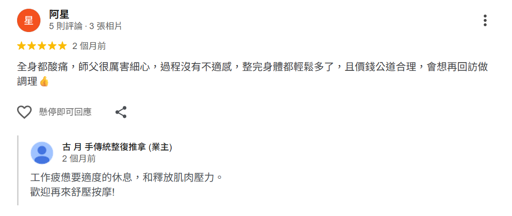

古月手 傳統整復推拿
專業傳統整復推拿、經絡調理、刮痧拔罐、腳底按摩、臉部撥經
【體驗一場源自山林智慧的整復調理～古 月 手】
承襲布農族山林自然智慧，融合傳統整復、經絡調理與現代筋膜學概念，造就現在的古月手！以全息調理法，透過獨創『拮抗鬆筋術』與『徒手刮經術』，精準釋放深層緊繃，促進血液循環、消除疲勞、紓解筋骨，重建能量平衡。秉持著無藥物，無侵入的做法，讓人身心放鬆無負擔。
【認識專業整復調理師－胡賢成】
胡老師整復調理經驗已有30逾年，技術源自布農族的山林自然智慧，透過獨創的技法，釋放筋膜組織壓力、消除疲勞，紓解筋骨，也是台灣許多政商名流與國外知名人士指定的整復調理師。精益求精的胡老師，擁有國家美容丙級技術士、國家傳統整復推拿技術士、國家腳底按摩技術士等證照，亦曾被仁德醫護管理專科學校聘任調理保健技術臨床專業指導教師，專業技術有目共睹。
我們的服務，讓你找到適合自己的方案！
整復調理
（60分鐘 1,200元）
（60分鐘 1,200元）
改善體態｜平衡身心
專業調理，緩解肌肉緊繃，改善姿勢，讓你身心放鬆，恢復自然平衡。
腳底按摩
（30分鐘 500元）
（30分鐘 500元）
促進血流｜放鬆足部
深層按壓穴位，促進血液循環，減輕疲勞，提升整體活力。
半身按摩
（30分鐘 500元）
（30分鐘 500元）
緩解緊繃｜改善血循
放鬆上半身肌肉，減輕壓力，提升血液循環，適合長時間久坐者。
刮痧
（30分鐘 600元）
（30分鐘 600元）
排毒解壓｜改善肌膚
傳統療法，促進氣血流通，排除毒素，改善肌膚與身體狀況。
拔罐
（30分鐘 600元）
（30分鐘 600元）
疏通經絡｜調理身體
刺激穴位，疏通經絡，排除疲勞，促進修復，適合長期疲憊者。
全身按摩
（60分鐘 1,000元）
（60分鐘 1,000元）
深度放鬆｜提升活力
全身放鬆按摩，改善血液循環，緩解肌肉緊繃，讓身心靈都獲得全面舒緩。
臉部淨化術
（60分鐘 1,200元）
（60分鐘 1,200元）
深層清潔｜肌膚亮白
深層清潔肌膚，改善肌膚質地，讓肌膚煥發自然光彩，提升自信美麗。
營業時間：週日至週一，早上10:00至晚上10:00
歡迎電話預約02–27789196
媒體報導
舉例：中天新聞台
相關證書

學員見證





